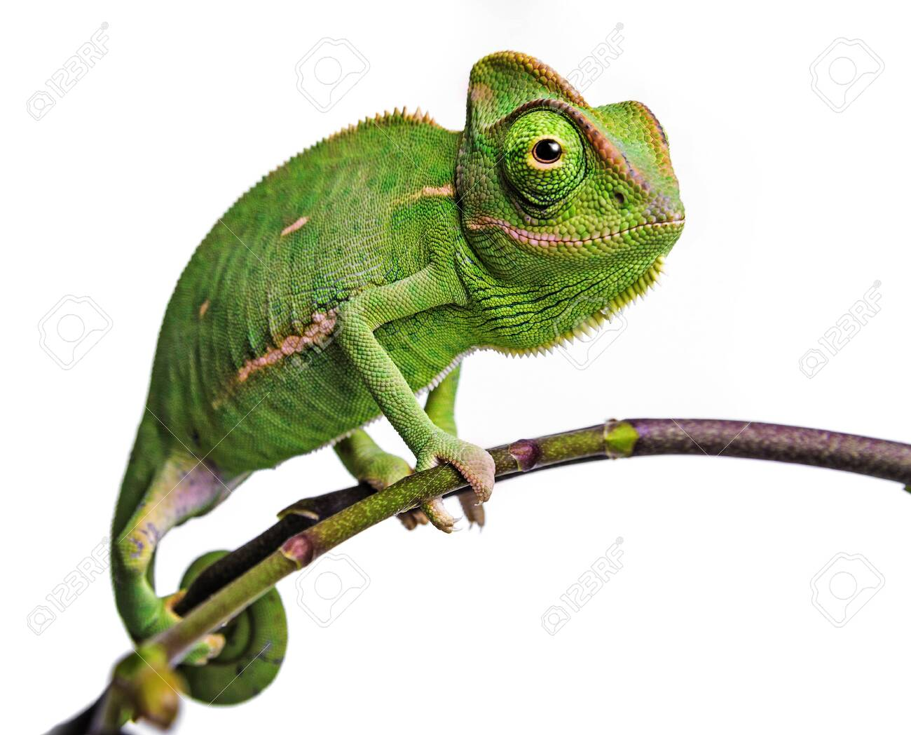
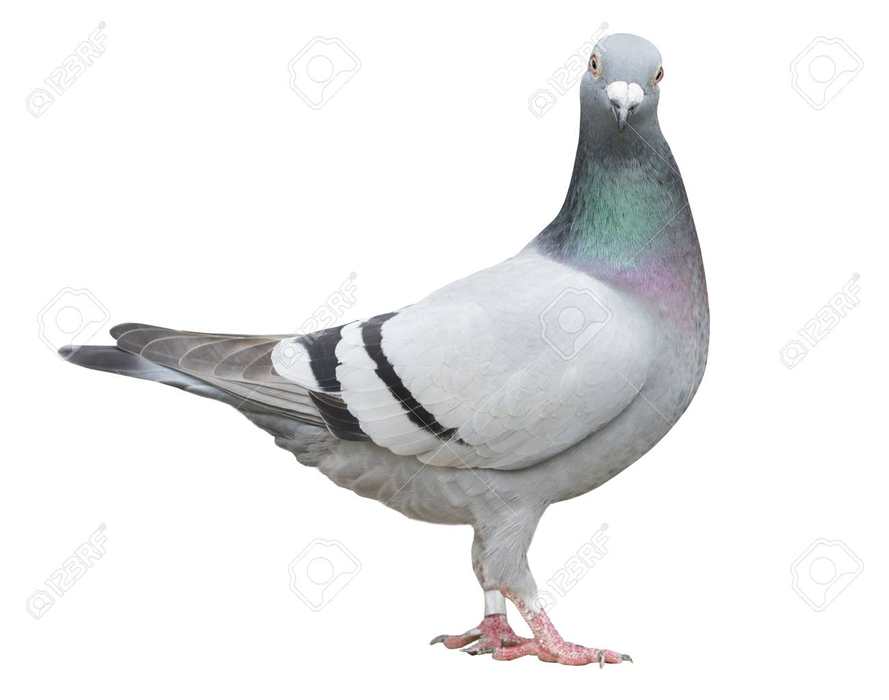
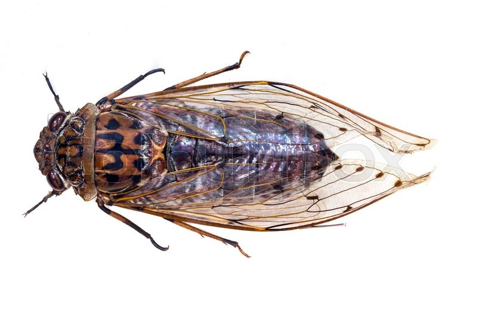

Origami Designs
About Us
Follow Us

Interesting Facts About Chameleons
- Chameleons are reptiles that are part of the iguana suborder
- Changing skin colour is an important part of communication in Chameleons
- Most Chameleons have a prehensile tail that they use to wrap around tree branches
Interesting Facts About Camels
- Camels have three sets of eyelids and two rows of eyelashes to keep sand out of their eyes
- Camels have thick lips which let them forage for thorny plants other animals can't eat
- Camels are very strong and can carry up to 900 pounds for 25 miles a day

Interesting Facts About Pigeons
- Pigeons are incredibly complex and intelligent animals
- Pigeons are renowned for their outstanding navigational abilities
- Pigeons mate for life, and tend to raise two chicks at the same time
Interesting Facts About Pandas
- Pandas go from pink to white and black (or brown)
- Pandas are "lazy" — eating and sleeping make their day
- Pandas have so many fans because they look cute

Interesting Facts About Flying-Cicada
- Cicadas can survive a huge fall as babies, or nymphs
- Female Cicadas may be attracted to the sound of motors
- Most Cicadas have red-orange eyes